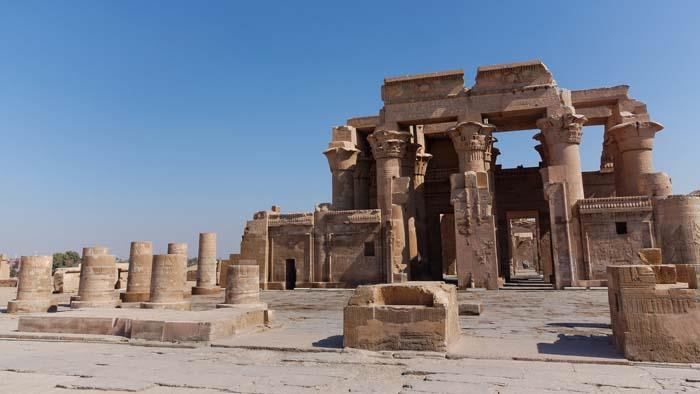
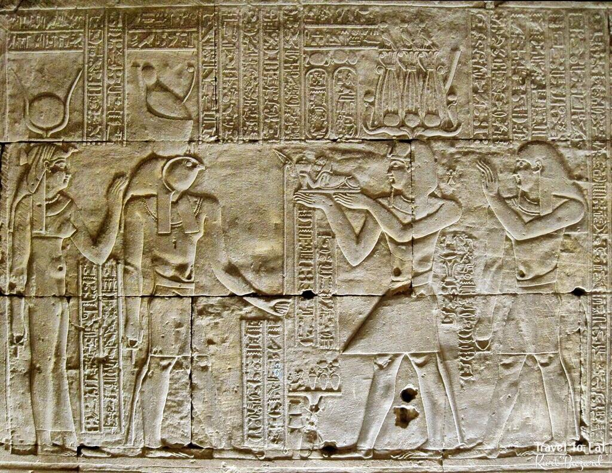
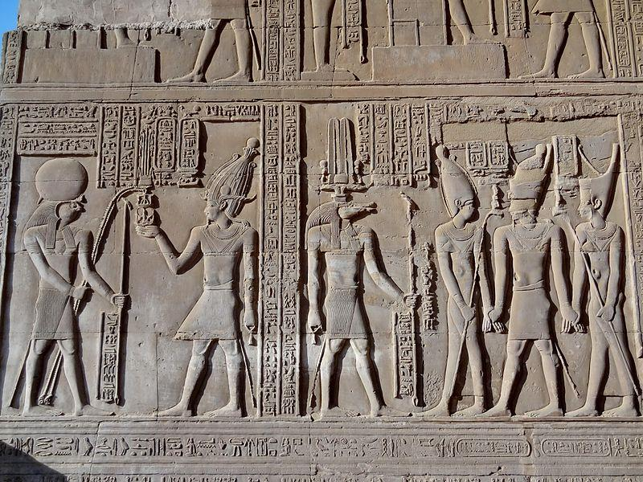
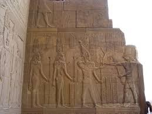
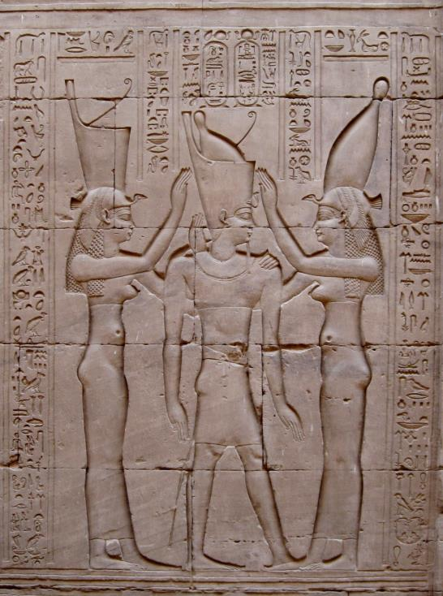

📖 قاموس الكلمات الصعبة والمصطلحات الأكاديمية للإرشاد السياحي
استخرجنا لك هنا كافة المصطلحات الأكاديمية والكلمات التاريخية الواردة في صفحات المحاضرة (55–63)، مع النطق الصوتي والترجمة والمدلول الإرشادي اللازم لامتحاناتك الميدانية والجامعية:
Philometor
فيلوميتور (المحب لأمه / Mother-loving)
اللقب الرسمي لبطليموس السادس، اتخذه تعبيراً عن بره ووصاية والدته كليوباترا الأولى، واشتهر بنبله وتسامحه غير المعتاد بين ملوك البطالمة.
Physcon
فيسكون (المنتفخ / صاحب البطن الكبيرة)
اللقب الذي أطلقه شعب الإسكندرية بسخرية على الملك بطليموس الثامن بسبب سمنته المفرطة، كما أطلقوا عليه لقب كاكيرجيتس (صانع الشرور) لوحشيته.
Euergetes II
إيورجيتس الثاني (صانع الخير الثاني)
اللقب الرسمي الحاكم لبطليموس الثامن تيمناً بجده بطليموس الثالث، وأرّخ سنوات حكمه رجعياً متجاهلاً سنوات حكم أخيه الأكبر بطليموس السادس.
Circle / Line in the Sand
حلقة الرمال الرومانية (168 ق.م)
الدائرة التي رسمها السناتور الروماني بوبيليوس ليناس بعصاه حول الملك أنطيوخوس الرابع وأجبره على الجلاء فوراً عن مصر قبل الخروج منها!
Popillius Laenas
السناتور الروماني بوبيليوس ليناس
مبعوث مجلس الشيوخ الروماني (مجلس السينات)، أنقذ الإسكندرية عام 168 ق.م وفرض هيبة روما على الشرق مدشناً الوصاية الرومانية على مصر.
Tripartite Joint Rule
الحكم الثلاثي المشترك للإخوة
نظام الحكم الفريد الذي دبرته الملكة كليوباترا الثانية ليحكم الإخوة الثلاثة (بطليموس السادس وكليوباترا الثانية وبطليموس الثامن) مصر معاً.
Temple of Kom Ombo
معبد كوم أمبو المزدوج بأسوان
المعبد الشهير المشيد لعبادة ثنائية مزدوجة للإلهين حورس التمساح سوبك وحورس الأكبر، بدأه بطليموس السادس واستكمله بطليموس الثامن (ص 58).
The Two Cleopatras
الملكتان كليوباترا (الثانية والثالثة)
زواج بطليموس الثامن في آن واحد من أخته كليوباترا الثانية وابنتها (ابنة أخته وزوجته) كليوباترا الثالثة، وتصويره في المعابد بينهما (ص 63).
Prince Memphites
الأمير ميمفيتس بن بطليموس الثامن
الطفل الضحية الذي قتله والده بطليموس الثامن بقبرص ومزق جثته وقطع رأسه وأرسلها في صندوق لوالدته كليوباترا الثانية يوم عيد ميلادها!
Neos Philopator (Ptolemy VII)
بطليموس السابع نيوس فيلوباتور (145 ق.م)
الملك الصبي ابن بطليموس السادس وكليوباترا الثانية، اغتاله عمه بطليموس الثامن في ليلة زفافه من أمه للاستيلاء على العرش.
Maritime Route to India
اكتشاف طريق الهند التجاري المباشر
البعثة الاستكشافية البحرية التي رعاها بطليموس الثامن في أواخر عهده عبر البحر الأحمر والمحيط الهندي بقيادة الملاح إيدوكسوس.
Expulsion of Alexandrian Scholars
طرد علماء وفلاسفة الإسكندرية
الإجراء الانتقامي البشع لبطليموس الثامن؛ حيث نكل بالمثقفين وعلماء الموسيون وطردهم من الإسكندرية، فهاجروا ونشروا العلم باليونان وروما.
Retroactive Dating (25th Year)
التأريخ بالعام 25 للحكم
حين انفرد بطليموس الثامن بالعرش عام 145 ق.م، اعتبره العام الـ 25 لحكمه وليس الأول، حاسباً حكمه منذ إعلانه ملكاً أول مرة عام 170 ق.م.
Cleopatra II
الملكة كليوباترا الثانية الحاكمة
أول ملكة بطلمية تنجح في اعتلاء العرش كحاكمة منفردة بدعم شعب الإسكندرية وطرد زوجها الثامن خارج البلاد، ونافست ملوك عصرها دهاءً.
بطليموس السادس فيلوميتور، وصاية كليوباترا الأولى، والغزو السلوقي لمصر
🇪🇬 الترجمة الأكاديمية والشرح التفصيلي للفقرة
ص ٥٥ - ٥٦ بالكتاب• اعتلاء بطليموس السادس العرش ووصاية الأم (180 ق.م): ارتقى الملك الصغير بطليموس السادس فيلوميتور (Ptolemy VI Philometor) العرش وهو في السابعة من عمره (7 years)؛ وبناءً على ذلك وُضع تحت الوصاية الرسمية لوالدته الملكة كليوباترا الأولى.
• سياسة كليوباترا الأولى السلمية: بذلت الملكة كليوباترا الأولى جهوداً دبلوماسية خارقة للحفاظ على علاقات الصداقة والسلام الوطيد بين مصر والمملكة السلوقية (موطنها الأصلي)، ولم تُقحم مصر في أي صراعات أو حروب خلال فترة وصايتها؛ لكنها للأسف لم تعش طويلاً وتوفيت مبكراً (نحو 176 ق.م).
• وصاية القصر الفاشلة وتجدد الصراع: بعد وفاة كليوباترا الأولى، وُضع الملك الصغير تحت وصاية رجلين من موظفي القصر الملكي (إيولايوس ولينياوس). ولم يكن هذان الوصيان على قدر من الحكمة والحصافة؛ فتدهورت العلاقات مجدداً مع السلوقيين، خاصة عندما رفض الملك السلوقي أنطيوخوس الرابع دفع إيرادات سورية المجوفة لمصر، زاعماً أن تلك الإيرادات كانت مجرد منحة شخصية لكليوباترا الأولى خلال حياتها فقط!
• غزو أنطيوخوس الرابع وسقوط منف: شن الملك السلوقي أنطيوخوس الرابع هجوماً كاسحاً وغزا مصر، ونجح في احتلال العاصمة الدينية التاريخية منف (Memphis)، وواصل زحفه بجيشه حتى بلغ مشارف وأسوار الإسكندرية! ثم اضطر للتراجع مؤقتاً إلى سوريا لإخماد تمردات داخلية.
• اختفاء بطليموس السادس وتتويجه في منف: خلال هذه الأحداث اختفى بطليموس السادس فيلوميتور؛ ورجح بعض العلماء أنه فرّ خارج البلاد بينما اعتقد آخرون أنه وقع أسيراً. وخلال هذه الفترة بلغ الملك سن الرشد والرجولة، وتزوج من شقيقته الملكة كليوباترا الثانية (Cleopatra II) وتُوّج في منف فرعوناً جديداً.
ORIGINAL ENGLISH SOURCE
Ptolemy VI (Philomator) 180-145 BC
"Ptolemy VI ascended the throne at the age of 7 years, therefore he was placed under the regency of his mother queen Cleopatra I. Queen Cleopatra I made a lot of efforts to keep a good relationship between Egypt and Seleucid Kingdom during her regency on Egypt, and she also didn't involved Egypt in any kind of wars in her regency, unfortunately, this queen didn't live along, and therefore the young king was placed under the formal regency of two men working in the royal palace after the queen's death."
"The two men weren't wise enough and as result that the relationship between Egypt and Seleucid Kingdom disturbed again especially when king Antiochus refused to pay Egypt the revenue of Cole Syria claiming that the revenue of Cole Syria was given to Cleopatra I during her lifetime."
"King Antiochus IV decided to invade Egypt, and he succeeded in occupying the city of Memphis, then he continued his invasion until he reached the borders of Alexandria, then he was forced to return back to Syria to put down some of the internal revolts. At the same time king Ptolemy Philomator was disappeared..."
حكاية للتاريخ والإرشاد: كيف حمت حكمة كليوباترا الأولى مصر وماذا حدث بعد رحيلها؟
حين توفي بطليموس الخامس، كانت الملكة كليوباترا الأولى هي صمام الأمان الوحيد بين القوتين العظميين مصر وسوريا؛ فهي ابنة الملك السلوقي وزوجة الفرعون المتوفى ووالدة الملك الصبي بطليموس السادس. أدارت كليوباترا الدولة بحكمة وهدوء، واستطاعت الحفاظ على خزانة مصر دون إطلاق سهم واحد. لكن بموتها المبكر، تسلم الوصاية خادمان من البلاط قادا البلاد برعونة، ففتحا باب الحرب السورية السادسة وجلبا جيش خال الملك (أنطيوخوس الرابع) ليدوس بأقدامه أرض الدلتا ويحتل منف ويهدد الإسكندرية بالسقوط التام!
الحكم الثلاثي للإخوة، استغاثة روما، ولغز «دائرة بوبيليوس في الرمال» (168 ق.م)
🇪🇬 الترجمة الأكاديمية والشرح التفصيلي للفقرة
ص ٥٦ - ٥٧ بالكتاب• تنصيب بطليموس الثامن والحكم الثلاثي: عندما وصلت أنباء سقوط منف في يد السلوقيين إلى الإسكندرية، بايع الشعب السكندري الأخ الأصغر بطليموس الثامن إيورجيتس الثاني (Ptolemy VIII) ملكاً. وتدخلت شقيقتهما الحكيمة الملكة كليوباترا الثانية وأقنعت الأخوين بنبذ الشقاق والحكم معاً في سلام، ونجحت في إرساء نظام الحكم الثلاثي المشترك للإخوة.
• حصار الإسكندرية والاستنجاد بروما: قرر الملك السلوقي أنطيوخوس الرابع إعادة غزو مصر مجدداً عام 168 ق.م؛ وتقدم حتى طوق مدينة الإسكندرية وحاصرها تماماً. وهنا أرسل الملوك البطالمة وفداً مستعجلاً إلى مجلس الشيوخ الروماني في روما (Rome) طلباً للمساعدة والحماية العسكرية العاجلة.
• وصول السناتور الروماني بوبيليوس ليناس: استجابت روما على الفور وأرسلت وفداً دبلوماسياً رفيع المستوى برئاسة السناتور الصارم بوبيليوس ليناس (Popillius Laenas)، والتقى بأنطيوخوس الرابع في ضاحية إليوسيس خارج أسوار الإسكندرية.
• المعجزة الدبلوماسية ولغز حلقة الرمال: طالب بوبيليوس الملك السلوقي بوقف غزوه والانسحاب الفوري من الأراضي المصرية؛ لكن أنطيوخوس الرابع طلب مهلة للتفكير والتشاور مع مستشاريه وقادته. فقام بوبيليوس برسم دائرة حول أنطيوخوس في الرمال بعصاه الخشبية، وقال له بصرامة: «قبل أن تخطو خطوة واحدة خارج هذه الدائرة، أعطني قرارك النهائي الذي سأنقله لمجلس الشيوخ في روما!».
• الانسحاب السلوقي الخاضع: أدرك أنطيوخوس الرابع الرعب من الدخول في حرب مع روما المنتصرة، فاستسلم فوراً وخضع للأوامر الرومانية، وسحب جيوشه وخرج من مصر خائباً! وبذلك أنقذت روما عرش البطالمة، لكن مصر أصبحت منذ هذا التاريخ تحت الحماية والوصاية الرومانية الفعلية.
ORIGINAL ENGLISH SOURCE
"The news of fallen Memphis in the hand of Antiochus IV reached Alexandria, the people appointed the younger king Ptolemy VIII Euergetes II. Queen Cleopatra II convinced the two kings to rule together peacefully and she succeeded in keeping good relationship between the two brothers."
"King Antiochus IV decided to reinvade Egypt again, and the two kings send an embassy to Rome asking for some help. King Antiochus IV reached Alexandria and surrounded the city. A Roman embassy arrived at Alexandria and it was headed by senator called Popillius Laenas, then he went to meet Antiochus IV."
"Laenas asked Antiochus IV to stop his invasions and return back to Syria, but Antiochus IV asked to give him period of time to ask his advisors before giving him his final decision. Therefore, Antiochus IV agreed to withdrew from Egypt and obey the Roman orders."
حكاية للتاريخ والإرشاد: كيف طردت «عصا خشبية ودائرة في الرمل» أضخم جيوش آسيا من مصر؟
تعتبر حادثة «دائرة بوبيليوس ليناس» (Circle in the sand) أشهر مثل دبلوماسي في التاريخ البشري! كان أنطيوخوس الرابع يرى نفسه ملكاً جباراً ملقباً بـ «إبيفانس» (الإله المتجسد)، ويقف بجيشه على مشارف الإسكندرية واثقاً من ابتلاع مصر بأكملها. وحين تقدم للترحيب بصديقه القديم السناتور الروماني ومد يده لمصافحته، رفض بوبيليوس مد يده وأعطاه لوح الشيوخ الروماني المأساوي! وحين تلعثم أنطيوخوس محاولاً المماطلة، دار بوبيليوس حوله ورسم بعصاه خطاً دائرياً في رمال الشاطئ وقال له: «إن خرجت قدمك من هذه الحلقة قبل أن تقرر الانسحاب، فاعلم أن روما في حالة حرب معك من هذه اللحظة!». نكس أنطيوخوس رأسه رعباً وقال: «سأفعل ما يأمر به الشيوخ»، وانسحب بجيوشه في مشهد أظهر للعالم أن روما أصبحت السيد الحقيقي للبحر المتوسط!
صراع الإخوة، تقسيم روما، شهامة بطليموس السادس، وتشييد معبد كوم أمبو
🇪🇬 الترجمة الأكاديمية والشرح التفصيلي للفقرة
ص ٥٧ - ٥٨ بالكتاب• خمس سنوات من السلام ثم اشتعال المؤامرات: حكم الأخوان معاً بسلام لمدة خمس سنوات، حتى أثار ضابط جيش يُدعى «ديونيسيوس» فتنة مدعياً أن الأخ الأكبر يسعى لقتل أخيه الأصغر للانفراد بالحكم. ولما ذهب بطليموس السادس ونفى هذه التهمة، هرب الضابط، لكن بطليموس الثامن استغل الأمر وزعم أن أخاه دبر قتله، فاندلعت ثورة في الإسكندرية أدت لهروب بطليموس السادس إلى روما طلباً للحماية.
• قرار التقسيم الروماني (التحكيم الدولي): طلبت روما من بطليموس السادس التوجه لقبرص؛ ولم يطل به المقام حتى طرد شعب الإسكندرية أخاه الأصغر واستدعوا بطليموس السادس ليعود ملكاً محبوباً. وأصدرت روما قراراً ملزماً بتقسيم الإمبراطورية: يحكم بطليموس السادس مصر وقبرص، بينما يحكم بطليموس الثامن إقليم قورينائية (برقة في ليبيا).
• غزو قبرص وتسامح بطليموس السادس النادر: هاجم بطليموس الثامن جزيرة قبرص للاستيلاء عليها، لكن بطليموس السادس هزمه وأسره! والمفاجأة المذهلة أنه بدلاً من إعدامه، عفا عنه وسامحه وأعاده ملكاً على ليبيا، ووعده بتزويجه ابنته كليوباترا لترسيخ الوفاق!
• تشييد معبد كوم أمبو الخالد (ص 58): بدأ بطليموس السادس فيلوميتور بناء معبد كوم أمبو (Temple of Kom Ombo) في صعيد مصر كمعبد مزدوج فريد مكرس للإلهين حورس الأكبر وسوبك التمساح، ويُعد من أروع مزارات صعيد مصر السياحية اليوم.
• وفاة بطليموس السادس الفارس (145 ق.م): توجه الملك إلى سوريا لمحاربة أعدائه، فسقط من فوق صهوة جواده بعد إصابته بجراح بالغة في معركة أونوينوباراس، وتوفي بعد أربعة أيام من الإصابة عام 145 ق.م.
ORIGINAL ENGLISH SOURCE
"The two brothers ruled together peacefully for five years, then the army officer called Dionysius claimed that the older brother was trying to kill his younger brother... During this time Rome reached a decision which was Ptolemy VI ruled Egypt and Cyprus while Ptolemy VIII should rule Cyrenaica."
"After short period of time Ptolemy VIII invaded Cyprus but Ptolemy VI succeeded in defeating his younger brother and also captured him. But instead of killing him, he forgave him and he sent back to Libya to be the king there, moreover, he promised him that he would give him his daughter Cleopatra to be his wife."
"Ptolemy VI went to Syria to fight some of his enemies there but he fell from his horse after being badly wounded, he died after 4 days."
"Temple of Kom Ombo was built between 332 BC and 395 AD, during the Ptolemaic Period, by Ptolemy VI Philometer."
حكاية للتاريخ والإرشاد: الفرعون المتسامح الذي عفا عن أخيه الخائن وبنى كوم أمبو
في عصر تميز بالاغتيالات والسموم، كان بطليموس السادس فيلوميتور حالة نادرة واستثنائية من النبل والتسامح؛ وحين قبض جنوده على شقيقه الخائن بطليموس الثامن مكبلاً بالأصفاد في قبرص بعد محاولة الانقلاب عليه، توقع الجميع أن يقطع رأسه فوراً. لكن فيلوميتور فك قيود أخيه وعانقه قائلاً: «أنت أخي ولن ألوث يدي بدمك!»، وأعاده حاكماً على برقة. وتخليداً لهذا التوازن الروحي، شيد بطليموس السادس معبد كوم أمبو على ربوة تطل على النيل وجعل له مدخلين وهيكلين متوازيين تماماً في تناغم فريد بين الإله حورس الحكيم والإله سوبك القوي، ليبقى المعبد حتى اليوم شاهداً على عصر هذا الملك الفريد.
اغتيال بطليموس السابع، طغيان بطليموس الثامن فيسكون، ومأساة الأمير ميمفيتس
🇪🇬 الترجمة الأكاديمية والشرح التفصيلي للفقرة
ص ٦٠ - ٦١ بالكتاب• بطليموس السابع نيوس فيلوباتور (145 ق.م): كان بطليموس السادس قد عين ابنه الصغير شريكاً في الحكم تحت اسم «نيوس فيلوباتور»، وتولى الحكم بعد وفاة أبيه تحت وصاية والدته كليوباترا الثانية. ولتجنب التدخل الروماني، رأت كليوباترا الثانية أن تتزوج من أخيها الثاني بطليموس الثامن ليحكما معاً.
• جريمة ليلة الزفاف الشنعاء (145 ق.م): ارتقى بطليموس الثامن العرش عام 145 ق.م، واعتبره عامه الخامس والعشرين (وليس الأول). وفي ليلة زفافه من كليوباترا الثانية، ارتكب جريمة مروعة؛ حيث قتل ابن أخيه الملك الصغير بطليموس السابع في أحضان أمه، وقدم جثمانه كـ «هدية زفاف» دموية للملكة المفجوعة!
• زواج الملكتين كليوباترا (الأم والابنة): أنجبت كليوباترا الثانية ابناً سُمي «ميمفيتس» (Memphites)؛ وبعد ذلك قام بطليموس الثامن بالزواج من ابنتها (ابنة أخته وزوجته) كليوباترا الثالثة (Cleopatra III)، وكانت قاسية وشديدة الطموح وتسعى للسيطرة المطلقة، فاشتعلت كراهية ضارية بين الأم وابنتها في القصر الملكي!
• ثورة الإسكندرية وهروب الملك لقبرص: عامل بطليموس الثامن شعب الإسكندرية بقسوة وفظاظة بالغة وطرد العلماء، فثار الشعب ضده وأحرقوا القصر؛ فهرب الملك إلى قبرص مصطحباً معه كليوباترا الثالثة وأولادها ومعه ابنه ميمفيتس. ونصب السكندريون كليوباترا الثانية حاكمة شرعية وحطموا تماثيل الملك في المدينة.
• المأساة الكبرى (تقطيع الأمير ميمفيتس): حين بلغت أنباء تحطيم تماثيله إليه في قبرص، استشاط بطليموس الثامن غضباً وانتقم بطريقة سادية؛ حيث قتل ابنه ميمفيتس وقطعه إلى قطع صغيرة، ووضع رأسه وأطرافه في صندوق صغير وأرسله هدية لوالدته كليوباترا الثانية يوم عيد ميلادها!
• أواخر عهد الملك واستكشاف طريق الهند (116 ق.م): استعاد بطليموس الثامن عرشه بالقوة، وبعد سنوات تم الصلح بين الملك والملكتين. وفي سنواته الأخيرة أظهر حكمة ورعاية للمصريين، ورعى مشروعاً بحرياً كبيراً لاكتشاف طريق التجارة البحرية إلى الهند (route to India). وتوفي عام 116 ق.م عن عمر يناهز 65 عاماً، وتوفيت كليوباترا الثانية بعده بفترة قصيرة، لتنفرد كليوباترا الثالثة بإدارة شؤون مصر.
ORIGINAL ENGLISH SOURCE
Ptolemy VIII, Euergetes II, Physcon King 145-116 BC.
"Ptolemy Euergetes II ascended the throne in the year 145 BC, he didn't consider it the first year of his reign but as the 25th years of his reign, he killed his nephew Neophilapator on his wedding night to queen Cleopatra II, and presented as weeding present to queen Cleopatra II..."
"Queen Cleopatra II gave birth to a child called Memphites, then Ptolemy Euergetes II married her daughter queen Cleopatra III, who was very ambitious, very cruel, and she wanted to have the upper hand in the royal palace..."
"Ptolemy Euergetes II treated the people of Alexandria in a very rough way and therefore they revolted against him, as result that he escaped from Egypt to Cyprus... when the news of such event reached Ptolemy VIII in Cyprus, he became very angry and killed his son Memphites and cut him into small pieces, and put him in a small box, and sent him back to his mother..."
"...he retained interest in some projects abroad and sent an expedition to attempt to discover the route to India. Ptolemy VIII died at the age of 65 in year 116 BC."
حكاية للتاريخ والإرشاد: صندوق الرعب في عيد ميلاد الملكة كليوباترا الثانية!
تعتبر مأساة الأمير ميمفيتس أبشع جريمة سياسية سجلتها سجلات التاريخ الإغريقي في مصر! كانت الملكة كليوباترا الثانية تحتفل في قصر الإسكندرية بعيد ميلادها وسط أنغام الموسيقى بعد أن طردت زوجها الطاغية فيسكون؛ وإذا بمبعوث ملكي يدخل حاملاً صندوقاً خشبياً فخماً مرصعاً بالشارات الملكية كهدية قادمة من قبرص. وحين أمرت الملكة بفتحه ظناً منها أنها مجوهرات أو تحف، ساد الذهول والصراخ في القاعة؛ حيث وجدت رأس ابنها الوحيد ميمفيتس البالغ من العمر 14 عاماً وأطرافه المقطوعة ملفوفة في أقمشة بيضاء ملطخة بالدماء! عرضت الملكة الصندوق على جماهير الإسكندرية، فاندلعت ألسنة النيران في كل ما يمت لفيسكون بصلة، لتسجل الذاكرة التاريخية وحشية هذا الملك الذي نافس أسوأ طغاة التاريخ القديم.
🖼️ الشواهد الأثرية المعتمدة بالكتاب الجامعي (ص ٥٨ و ٥٩ و ٦٢ و ٦٣)
الصور والنقوش الأثرية الأصلية المعتمدة في المقرر الدراسي والخاصة بمعبدي كوم أمبو وإدفو في عهد الملكين بطليموس السادس وبطليموس الثامن:

معبد كوم أمبو المزدوج
بدأ تشييده في عهد بطليموس السادس فيلوميتور، وهو المعبد البطلمي الفريد المزدوج المكرس لسوبك التمساح وحورس الأكبر على ضفاف نيل أسوان.

بطليموس السادس وكليوباترا الثانية أمام حورس
نقش جداري بديع يمثل الملك بطليموس السادس فيلوميتور وزوجته الملكة كليوباترا الثانية يقدمان القرابين أمام الإله حورس وحتحور بمعبد إدفو.

بطليموس الثامن يتسلم علامة الحب سد
نقش جداري يمثل الملك بطليموس الثامن إيورجيتس الثاني يتسلم شارات عيد اليوبيل الملكي الثلاثيني (الحب-سد) وعلامة الخلود من الإله حورس.

حورس يهدي سيف النصر للملك والملكتين
الإله حورس يقدم سيف النصر المقوس (الخوبش) وجريد النخيل لبطليموس الثامن ومعه الملكتان كليوباترا الثانية وكليوباترا الثالثة.

تتويج بطليموس الثامن بين واجيت ونخبت
إلهتا التاج والوحدة واجيت ربة الشمال ونخبت ربة الجنوب تتوجان الفرعون بطليموس الثامن بتاج الوجهين البحري والقبلي بمعبد إدفو.
🎯 بنك الأسئلة التدريبي التفاعلي للمحاضرة التاسعة (10 أسئلة)
مُعد طبقاً لنص ومصطلحات د. مرفت ماهر أمين — اختيار من متعدد مع التصحيح الفوري والشرح النموذجي.
نتيجة التقييم الفوري
أجب عن الأسئلة واضغط «تصحيح الاختبار» لإظهار نتيجتك وملاحظات المراجعة.